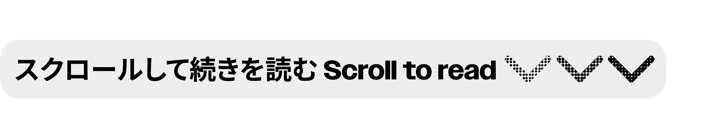

Helen ➩ Could you briefly introduce yourself? Including your nickname, pronouns, age, and current occupation.
Annabel ➩ I’m Annabel, 22 years old, majoring in illustration, and currently living in North America.
H ➩ Before you were selected as the interviewee, I learned that you have experience building parasocial relationships with fictional characters. Could you briefly describe through which mediums (manga/comics, anime/animation, games, novels, movies, TV dramas, etc.) you primarily establish such relationships with fictional characters?
A ➩ Both manga and anime. For example, Shueisha, one of Japan’s largest magazine publishers, publishes Weekly Shonen Jump, which regularly releases new manga. I usually enjoy participating in activities like voting for new manga, mainly because, as a reader, I’m always looking forward to see better works.
H ➩ So you’ve been consistently voting for your favorite manga?
A ➩ Yes. For Japanese publishers, they use voting as a measure of a work’s popularity, which directly affects whether a series can continue. One manga I voted for that later became quite popular is Demon Slayer.
H ➩ Got it. So, based on these mediums, how do you establish parasocial relationships with fictional characters?
A ➩ When I like a character, I tend to reflect on why I like them. At different stages of my life, I’ve liked different fictional characters, and my preferences change quite quickly because I’m also growing and changing. The characters I like always align with my current state—either because I admire them or because they possess traits I lack.
For example, in Demon Slayer, my favorite character is Shinobu Kocho. She appears very gentle but actually has a strong temper. I feel she represents the kind of person I aspire to be in society.
H ➩ But Demon Slayer was still serializing when we were in high school or middle school, right? If you started supporting it from the beginning, that would’ve been middle school?
A ➩ I think it was high school.
H ➩ High school? Because I also read it in high school. You mentioned earlier that your fondness for a character is stage-specific. So, back in high school, did you already have aspirations like, “I want to become like this character in the future”?
A ➩ I started liking her after I entered college. The manga itself was something I enjoyed, but Shinobu Kocho was a character I grew fond of later on. By then, my mindset had begun shifting toward societal perspectives.
H ➩ I see and could you describe what kind of parasocial relationship this is?
A ➩ I really wish I could be like her. She’s someone I admire and look up to.
H ➩ Why do you think you formed this kind of relationship? How did the character resonate with you emotionally or in other ways?
A ➩ All the fictional characters I’ve liked have had a positive influence on me. What moved me most about Shinobu Kocho was her display of intense anger during the mid-to-late stages of the manga. Anger is a special emotion for me—one I’ve always had but struggled to express well. For Shinobu, it was the same, but she managed to channel her anger powerfully later in the story. When I saw that, I thought it was incredibly cool and inspiring.
Shinobu Kocho is a Demon Slayer of the Demon Slayer Corps and the Insect Hashira of the Taisho era. She was once straightforward and cool in character, but after her sister's death, she adopted a gentle demeanor while constantly suppressing her inner anger.

There’s another character I’ve grown fond of in recent years—Toshiro Hijikata from Gintama. This is a bit unusual because my fondness for him aligns more with my views on romantic relationships. Many people separate 2D characters from 3D life, but I tend to project my real-world values onto fictional characters. If a character wouldn’t meet my standards in real life, they wouldn’t in fiction either, especially for male characters. In Gintama, a series that tells more about daily life story than dark or tragic story, Toshiro Hijikata seems like the typical cold, aloof type, but he’s surprisingly easy to tease, there’s a contrast. He’s actually quite earnest and, in a relationship, could even take a subordinate role. As someone who values feminism, I’d prefer to be the dominant one in a relationship. So, I’ve projected my expectations for real-life romantic relationship onto this character, and since he fits, I’ve projected my emotions onto him.
Toshiro Hijikata is the chain-smoking "Demonic" Vice-Commander of the Shinsengumi who has garnered an infamous reputation for his ruthless, no-nonsense attitude both on and off the battlefield.
Also, Gintama is more adult-oriented—I say this because its comedic, everyday moments are layered with real-world melancholy. As a kid, I might not have understood it, but now as an adult, I appreciate the story more. Right now, I’d say I’m in a romantic relationship with Toshiro Hijikata, whereas when I was younger, I might’ve preferred more rebellious or lively personalities. Now, I find stability and simplicity appealing.
Do you ever dream about fictional characters?
I’ve actually dreamed about my favorite characters quite often. When you mentioned parasocial relationships, I thought dreams might be a great way to illustrate them. Dreams are inherently one-sided, and if you dream about a character, it often adds a new layer to your impression of them because the dream’s content can diverge from the original work, instead incorporating elements from your own life. The characters aren’t in their original world but in one you’ve constructed.
For example, in high school—when I was still a kind, naive girl—I once dreamed about a character from Haikyuu!!. In the dream, we were basically just walking together, along with other schoolmates. It felt like a genuine experience from the dreamer’s perspective, both visually and emotionally. There wasn’t much plot but we went visit a vintage clothing store together at one point. But none of this would happen in the original work, right?
For example, in high school—when I was still a kind, naive girl—I once dreamed about a character from Haikyuu!!. In the dream, we were basically just walking together, along with other schoolmates. It felt like a genuine experience from the dreamer’s perspective, both visually and emotionally. There wasn’t much plot but we went visit a vintage clothing store together at one point. But none of this would happen in the original work, right?
Since dream settings often draw from real-life places, I frequently dream of doing things with fictional characters in my own neighborhood.
H ➩ Do you feel like being in a familiar place deepens your connection with the character? Because the setting is closer to you, more personal?
A ➩ Absolutely. Being in a familiar environment creates a sense of stability, and interacting with a relationship in that context feels more comforting.
H ➩ Do you think this relationship has impacted your real life? Positively, negatively, or both?
A ➩ There’s really no negative impact. If anything, it’s allowed my imagination to flourish. I often think about what might happen if I were in their world. It’s similar to dreaming in a way.
H ➩ Lastly, have you made any efforts for this relationship? (Such as creating fanart, cosplay, buying merchandise, participating in related events, etc.)
A ➩ I’ve been buying merchandise for a long time—since middle school, so about nine years now. For any character I like, I’ll buy their merch. But as I mentioned earlier, my preferences shift with each life stage. While many people keep merch from past favorites, I always sell mine—it’s like saying goodbye to a past version of myself. There’s no point holding onto mementos of who I used to be, since I’ll never be that person again.
Buying merch is also a way to support the work directly. For example, publishers often track sales for the first wave of merchandise—it’s usually easy to predict which work will get the chance to be turned it to an anime work based on that. This kind of support helps the work thrive, which in turn maintains your connection to the characters.
For me, emotional engagement with fictional characters happens mostly through mental reflection. Like I said earlier, I enjoy dreaming about them and imagining scenarios—that process fulfills all my emotional needs, so I don’t feel the need for much else.